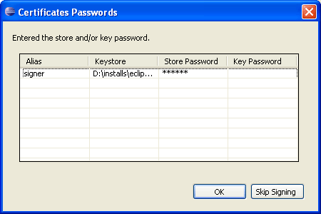

Generating a Deployment Package
A deployment package can be generated from a Deployment Package Project file by using the internal generator of the mToolkit Deployment Package Editor. You can use the Build tab of the package project from the editor to specify its export path.
To export a deployment package JAR file with the internal generator:
- (Optional) If you want to generate a deployment package JAR file (with extension .dp) without having to additionally browse the workspace for the source Deployment Package Project (.dpp) file, select the .dpp file in one of the Eclipse navigation views (e.g. Package Explorer) prior to opening the Export wizard. As a result, mToolkit will automatically fill in the location of the .dpp file in the Export wizard.
- Right-click on a node in the navigation view and use File > Export menu to launch the Export wizard.
- Expand the Deployment Package Development node and select the Deployment Package command to launch the corresponding wizard. Click Next.
- In the Deployment Package Export Wizard view and specify if needed:
- DPP file - The location within the workspace of the .dpp file which will be used to create the deployment package JAR file. If you have opened the Export wizard with a .dpp file selected in the navigation view, the DPP file field will be automatically populated.
- DP file - The location of the generated .dp file on the local file system. If you have opened the Export wizard with a .dpp file selected in the navigation view, the DP file field will be automatically populated with the location specified in the Build tab of the editor for the relevant .dpp file.

Figure 1: Exporting deployment packages with the Deployment Package Editor.
Figure 1: Exporting deployment packages with the Deployment Package Editor.
- Click Finish to generate the deployment package or Cancel - to exit the wizard.
Note: If you have not specified the keystore password(s) and/or the key password(s) associated with the deployment package signer(s) before generating a signed deployment package, a Certificates Passwords dialog is displayed. It prompts you to fill in the missing password(s). Passwords entered in this way are used only in the current generation operation and are not permanently saved in the Deployment Package Project file.

Figure 2: Enter the missing password(s) related to the deployment package signer(s).
Note: If some package's bundle resources, created with Eclipse PDE, have been updated (see "Automatic Update Detection"), depending on its settings (see "Configuring Deployment Package Editor") the Deployment Package Editor will auto-accept the updates in the deployment package or will ask you to do so.

Deployment Package Overview
Deployment Package Editor

Configuring Deployment Package Editor
Creating a Deployment Package Project File
Modeling Deployment Package Content
Configuring Deployment Package Building